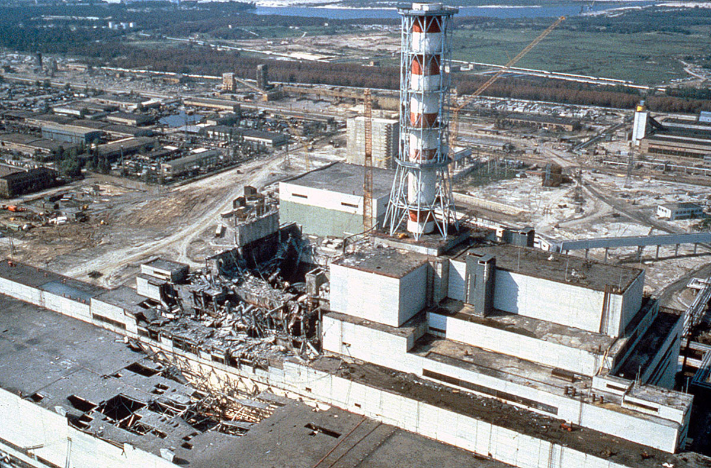
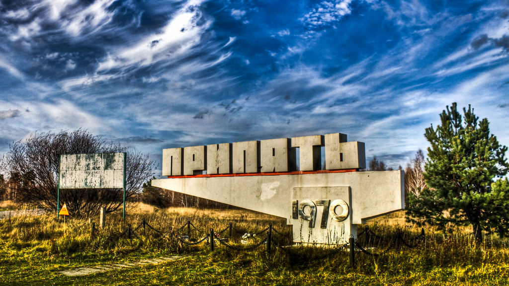
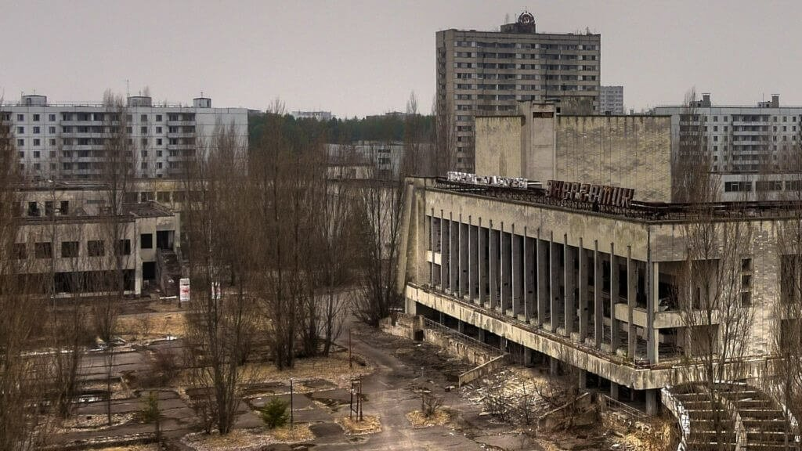
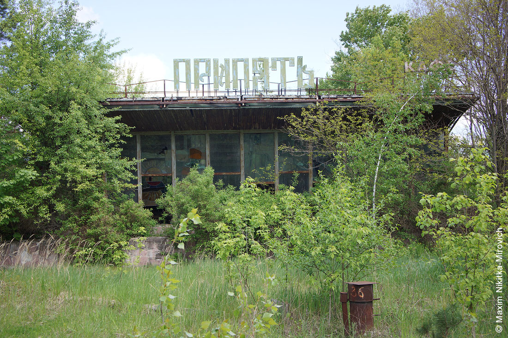
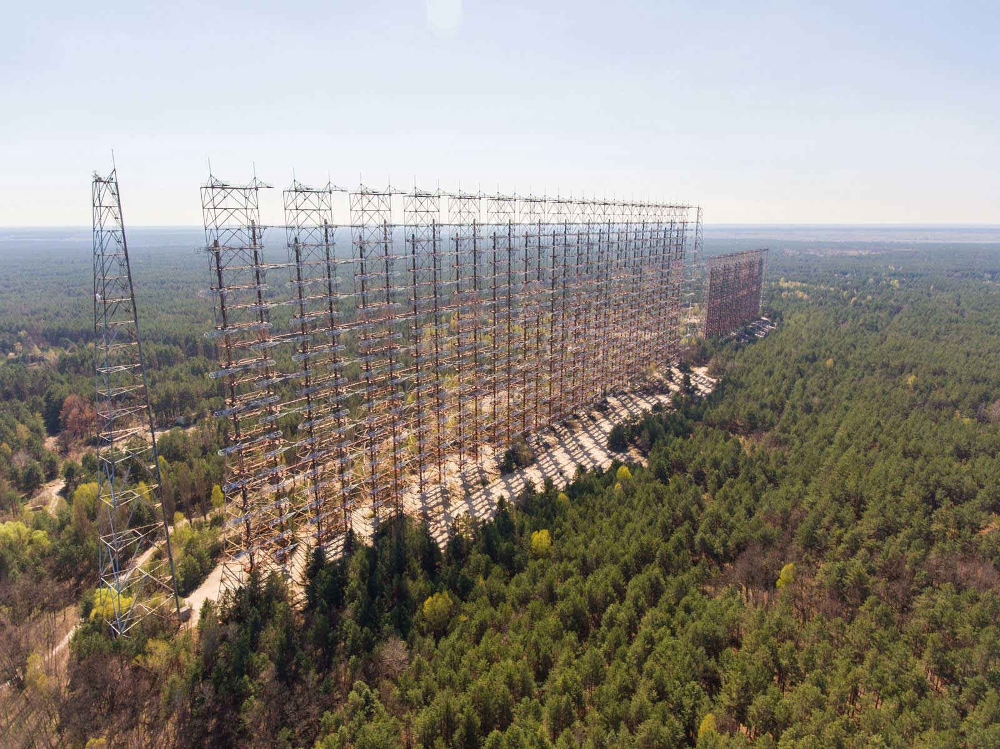

Чернобыль
26 апреля 1986 года в 01:23 на 4-м энергоблоке Чернобыльской АЭС произошёл взрыв, который полностью разрушил. Здание энергоблока частично обрушилось, в различных помещениях и на крыше начался пожар. Впослетствии остатки октивной зоны расплавились, смесь из расплавленного металла, песка, бетона и фрагментов топлива растеклись по подректорным помещениям.

На четвёртом энергоблоке Чернобыльской АЭС произошла авария, ставшая крупнейшей катастрофой в истории атомной энергетики. Из-за неисправности на 4 энергоблоке в ходе испытаний началась сильная атомная реакция и здание 4 энергоблока было разрушено. Все жители города после этого были эвакуированы, однако некоторые впоследствии вернулись в свои дома и сейчас живут на заражённой территории.

Город, расположенный в Вышгородском районе Киевской области Украины. Расположен в зоне отчуждения Чернобыльской АЭС на реке Припять, недалеко от её впадения в Киевское водохранилище.Город фактически полностью покинут после эвакуации города в связи с аварией.

Давайте прогуляемся по дастопримечатеностям Припяти!

Дворец «Энергетик» был построен в начале 70-х годов для посетителей Припяти и Чернобыльской АЭС. «Энергетик» являлся частью целого комплекса городских центральных зданий, куда входили сам дом культуры, универмаг, гостиница «Полесье», ресторан, кухня для детей, кинотеатр, аптека, зал для занятий спортом, гастроном и прочее. В ДК располагались клубы по интересам, выступали приезжие и местные артисты и коллективы, показывали концерты и спектакли.

Чертово колесо в Припяти — один из самых часто фотографируемых объектов покинутого города. Высота колеса обозрения Припяти точно неизвестна. Скорее всего, она составляла около 20–25 метров — стандартный параметр для таких аттракционов в советские годы. Ещё интерестный факт оно никогда не запускалось только когда на одной из экскурсий его немного здвинули, а так это просто одна из самых популярных мест в Припяти.

Кофе припять — до аварии оно успело проработать всего пол года, но за это время припятчане успели заценить самое вкусное мороженое и сиропы, что здесь продавали. Также здесь можно было отметить какие-то мероприятия или праздники.

До середины 1980-х годов это был совершенно секретный объект, позволявший отслеживать высоколетящие цели на дистанции от 900 до 3000 километров в приполярной зоне. С помощью мощнейших и ультрасовременных на то время радаров военные смогли, в прямом смысле слова, заглянуть за горизонт. Благодаря таким способностям этот комплекс получил название «Дуга-1».